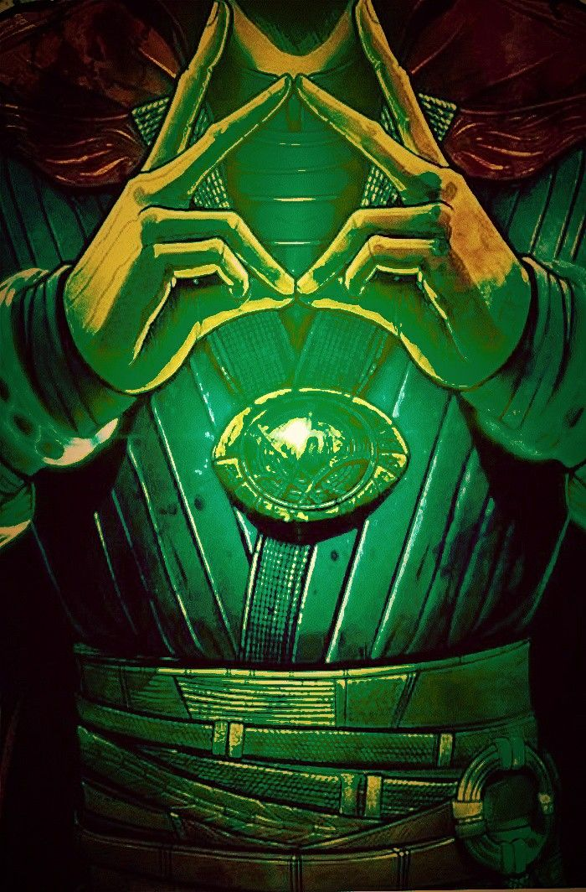
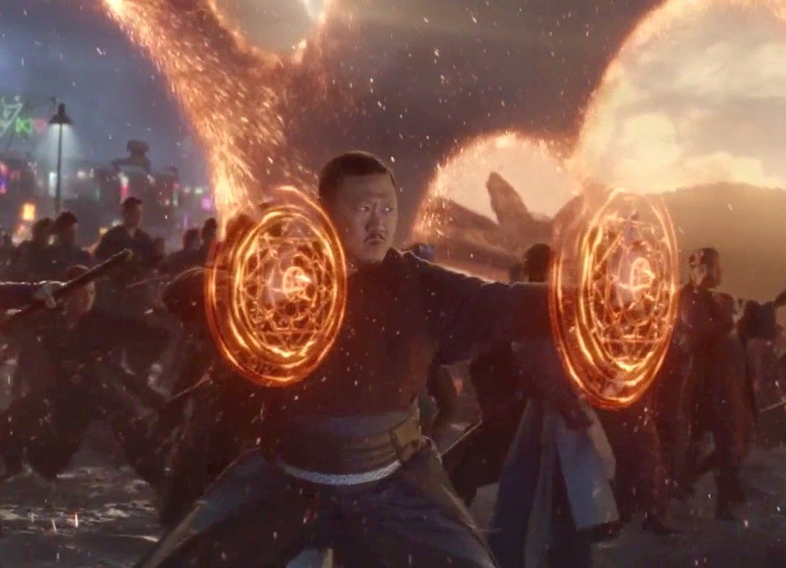
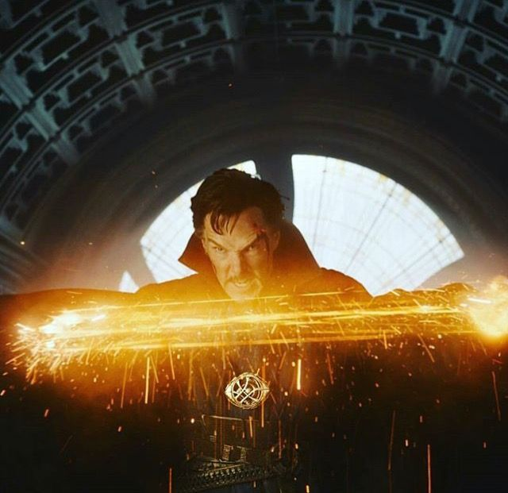
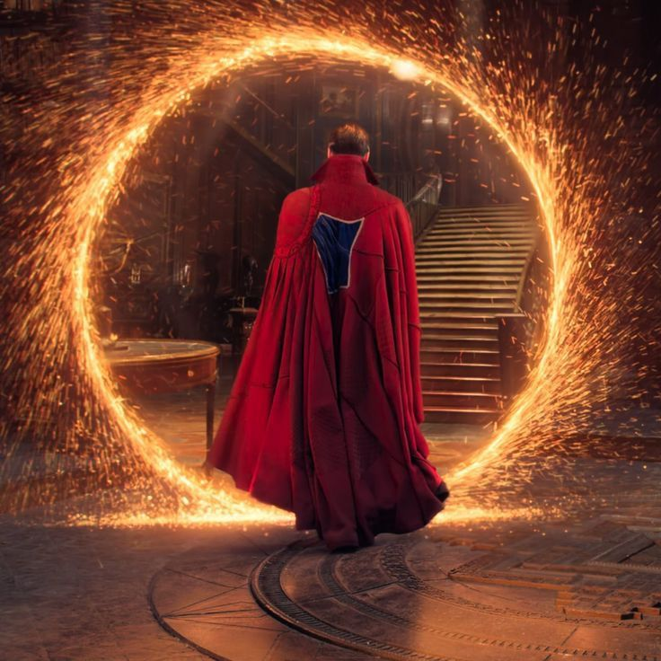

HECHIZOS Y HABILIDADES MAGICAS
Manipulación del Tiempo (Ojo de Agamotto)

Al activar la Gema del Tiempo, Strange puede rebobinar, acelerar o detener el flujo temporal sobre un objeto o una zona específica. Visualmente, este hechizo se reconoce por los círculos de energía verde que aparecen alrededor de su muñeca.Tráiler Oficial: Doctor Strange
Mandalas de Luz (Escudos Tao)

Es el hechizo básico de defensa y ataque. Consiste en discos de energía naranja con patrones geométricos complejos que aparecen en las manos del hechicero. Sirven para bloquear golpes físicos, proyectiles o incluso como plataformas para saltar.Látigos de Energía

El hechicero genera filamentos de energía mística que funcionan como látigos o sogas. Son extremadamente útiles para desarmar enemigos a distancia o para sujetar objetos pesados durante una batalla.Portales Interdimensionales

Utilizando el Anillo de Honda, el usuario crea un círculo de chispas doradas que conecta dos puntos en el espacio. Estos portales permiten viajar instantáneamente entre ciudades, planetas o incluso diferentes dimensiones.